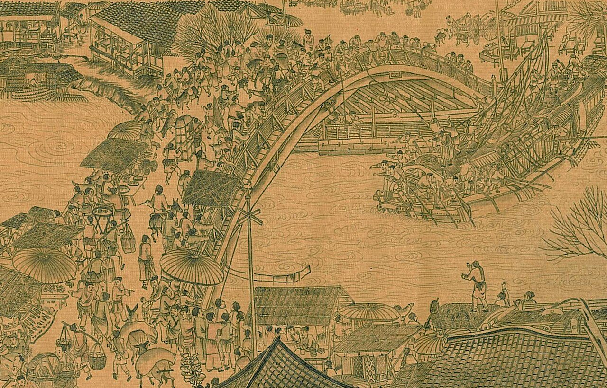
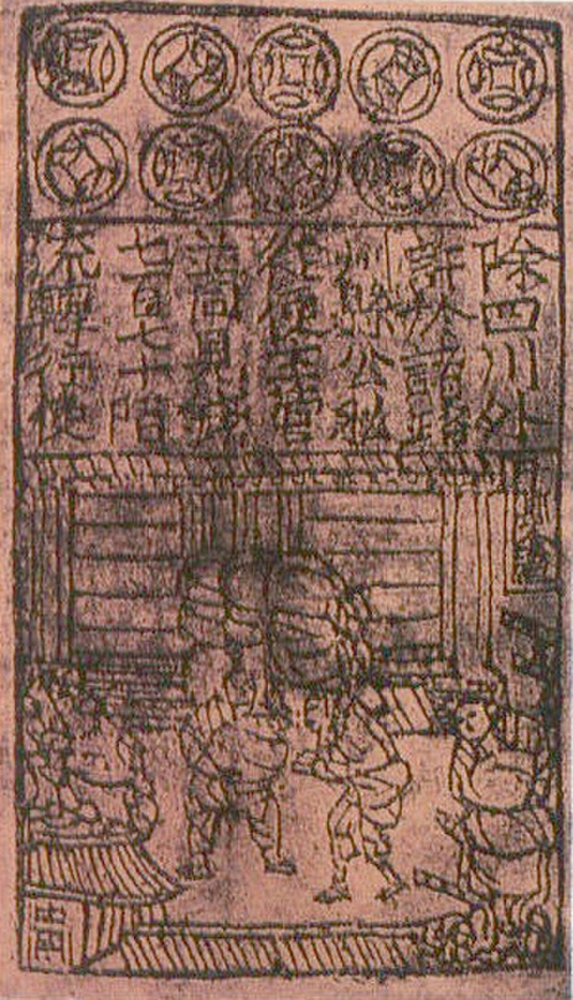

사진 · 청명상하도 무지개다리 부분
중학교 역사① · 4단원 지역 세계의 교류와 변화
카이펑송의 경제와 문화
장택단, 「청명상하도」 무지개다리 부분(북송, 12세기) · 퍼블릭 도메인
“송의 도시에는 왜
송의 도시에는 왜
사람과 물건이 넘쳤을까?
사실농업 · 상업 · 기술의 발달
해석무엇이 무엇을 낳았을까
확장바닷길로 이어진 세계
960
사실조광윤이 송을 세우다
해석군인보다 문신을 높이다(문치주의)
확장강해진 북방 민족
송을 이끈 사람들
사대부과거로 뽑힌 학자 관리
지주땅을 넓힌 새 부자
상인도시와 시장의 주인
참파벼
사실가뭄에 강하고 빨리 자라는 벼
해석강남 개발과 인구 증가
확장‘쑤저우·후저우가 풍년이면 천하가 넉넉하다’
사진 · 이 그림은
카이펑 그대로일까?
이 그림은
카이펑 그대로일까?
누가궁정 화가 장택단으로 전한다
누구에게황제와 궁정
사실·주장번영하는 도시의 모습
장택단, 「청명상하도」 무지개다리 부분(북송, 12세기) · 퍼블릭 도메인

사진 · 왜 쇠돈 대신
종이돈을 썼을까?
왜 쇠돈 대신
종이돈을 썼을까?
사실교자, 11세기 쓰촨
해석무거운 철전과 늘어난 거래
확장너무 많이 찍으면?
교자 인쇄 그림(북송 지폐로 전함) · 퍼블릭 도메인
송에서 널리 쓰인 기술
나침반바다 위의 길잡이
화약무기로 쓰이기 시작
활자 인쇄필승의 흙 활자
시박사
사실광저우 · 취안저우 · 명주(닝보)
해석바다 무역을 관리하고 세금을 걷다
확장고려의 벽란도와 잇기
1127
사실금이 카이펑을 함락하다
해석송이 남쪽으로 옮기다(남송)
확장임안(항저우)의 번영
돈이 종이가 되면
무엇이 필요할까?
사실교자 → 신용 카드 → 디지털 화폐
해석종이를 돈으로 믿게 하는 힘
확장믿음이 무너질 때
“송의 도시에 사람과 물건이 넘친 까닭은 이다.